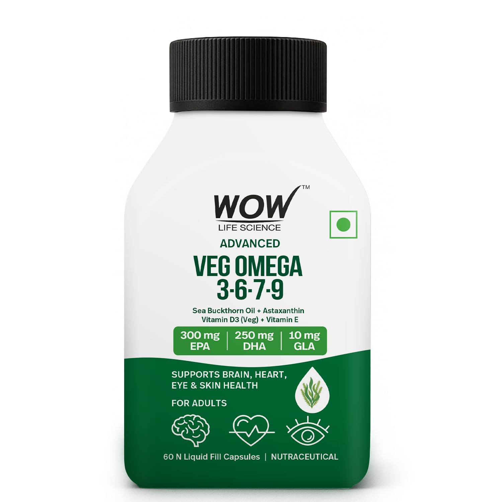
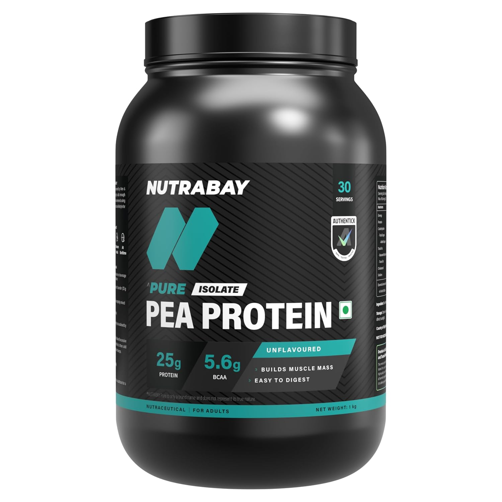

TL;DR
- Every supplement verified 100% vegan — capsules, fillers, and all
- Addresses the most common vegan nutrient gaps: B12, D3, Omega-3, Iron, Zinc
- Plant-based alternatives for everything in the core protocol
- Environmental hacks are the same — air, water, light apply to everyone
Why This Protocol
A well-planned vegan diet is powerful — but certain nutrients are harder to get in sufficient amounts from plants alone. This protocol fills those gaps with vegan-certified supplements. Every product has been checked: vegan capsules, no lanolin-derived D3, algae-sourced Omega-3, plant-based everything.
Vegan Supplements
B12 (Methylcobalamin) — Vegan
The #1 vegan supplement — cannot get B12 reliably from plants. Critical for energy and nerves.

WOW Algae Omega-3 + Astaxanthin
Trustified testing flags stated EPA/DHA levels — no harmful issues, but label claims may be overstated. Still a better option than skipping Omega-3 entirely on a vegan diet. Store in refrigerator to prevent rancidity.
Plant-based Omega-3 + astaxanthin antioxidant — algae is the original source fish get their Omega-3 from
Vegan D3 (Lichen-sourced) + K2
Lichen-derived D3 is the only truly vegan D3 — most D3 is lanolin (sheep's wool)
Magnesium Glycinate — Vegan
Sleep, recovery, stress — vegan certified, no animal-derived glycine sources
Iron Bisglycinate — Vegan
Vegan diets can be lower in bioavailable iron — bisglycinate is gentle and well-absorbed
Zinc Bisglycinate — Vegan
Phytates in plant foods reduce zinc absorption — supplementation helps fill the gap

Nutrabay Pure Pea Protein Isolate
Can cause bloating for some. Always take with food — never on an empty stomach.
Complete plant-based protein source — high leucine content supports muscle synthesis without any animal products
Creatine Monohydrate — Vegan
Vegans have lower creatine stores than omnivores — one of the most studied supplements
Environmental Hacks
HEPA Air Purifier
Indoor air quality affects sleep, energy, and immunity — no animal products involved
Water Filter
Clean water free of chlorine and heavy metals — plant-based diet amplifies the benefit
Blue Light Glasses
Protect melatonin — sleep quality is the foundation of everything
YouTube Videos